Hydrocarbons are the simplest organic compounds, but they have interesting physiological effects. These effects depend on the size of the hydrocarbon molecules and where on or in the body they are applied. Alkanes of low molar mass—those with from 1 to approximately 10 or so carbon atoms—are gases or light liquids that act as anesthetics. Inhaling (“sniffing”) these hydrocarbons in gasoline or aerosol propellants for their intoxicating effect is a major health problem that can lead to liver, kidney, or brain damage or to immediate death by asphyxiation by excluding oxygen.
Swallowed, liquid alkanes do little harm while in the stomach. In the lungs, however, they cause “chemical” pneumonia by dissolving fatlike molecules from cell membranes in the tiny air sacs (alveoli). The lungs become unable to expel fluids, just as in pneumonia caused by bacteria or viruses. People who swallow gasoline or other liquid alkane mixtures should not be made to vomit, as this would increase the chance of getting alkanes into the lungs. (There is no home-treatment antidote for gasoline poisoning; call a poison control center.)
Liquid alkanes with approximately 5–16 carbon atoms per molecule wash away natural skin oils and cause drying and chapping of the skin, while heavier liquid alkanes (those with approximately 17 or more carbon atoms per molecule) act as emollients (skin softeners). Such alkane mixtures as mineral oil and petroleum jelly can be applied as a protective film. Water and aqueous solutions such as urine will not dissolve such a film, which explains why petroleum jelly protects a baby’s tender skin from diaper rash.
We begin our study of organic chemistry with the alkanes, compounds containing only two elements, carbon and hydrogen, and having only single bonds. There are several other kinds of hydrocarbons, distinguished by the types of bonding between carbon atoms and by the properties that result from that bonding. In Chapter 13 "Unsaturated and Aromatic Hydrocarbons" we will examine hydrocarbons with double bonds, with triple bonds, and with a special kind of bonding called aromaticity. Then in Chapter 14 "Organic Compounds of Oxygen" we will study some compounds considered to be derived from hydrocarbons by replacing one or more hydrogen atoms with an oxygen-containing group. Chapter 15 "Organic Acids and Bases and Some of Their Derivatives" focuses on organic acids and bases, after which we will be ready to look at the chemistry of life itself—biochemistry—in the remaining five chapters.
Scientists of the 18th and early 19th centuries studied compounds obtained from plants and animals and labeled them organic because they were isolated from “organized” (living) systems. Compounds isolated from nonliving systems, such as rocks and ores, the atmosphere, and the oceans, were labeled inorganic. For many years, scientists thought organic compounds could be made by only living organisms because they possessed a vital force found only in living systems. The vital force theory began to decline in 1828, when the German chemist Friedrich Wöhler synthesized urea from inorganic starting materials. He reacted silver cyanate (AgOCN) and ammonium chloride (NH4Cl), expecting to get ammonium cyanate (NH4OCN). What he expected is described by the following equation.
AgOCN + NH4Cl → AgCl + NH4OCNInstead, he found the product to be urea (NH2CONH2), a well-known organic material readily isolated from urine. This result led to a series of experiments in which a wide variety of organic compounds were made from inorganic starting materials. The vital force theory gradually went away as chemists learned that they could make many organic compounds in the laboratory.
Today organic chemistryThe study of the chemistry of carbon compounds. is the study of the chemistry of the carbon compounds, and inorganic chemistryThe study of the chemistry of all other elements. is the study of the chemistry of all other elements. It may seem strange that we divide chemistry into two branches—one that considers compounds of only one element and one that covers the 100-plus remaining elements. However, this division seems more reasonable when we consider that of tens of millions of compounds that have been characterized, the overwhelming majority are carbon compounds.
The word organic has different meanings. Organic fertilizer, such as cow manure, is organic in the original sense; it is derived from living organisms. Organic foods generally are foods grown without synthetic pesticides or fertilizers. Organic chemistry is the chemistry of compounds of carbon.
Carbon is unique among the other elements in that its atoms can form stable covalent bonds with each other and with atoms of other elements in a multitude of variations. The resulting molecules can contain from one to millions of carbon atoms. In Chapter 12 "Organic Chemistry: Alkanes and Halogenated Hydrocarbons" through Chapter 15 "Organic Acids and Bases and Some of Their Derivatives", we survey organic chemistry by dividing its compounds into families based on functional groups. (For general information about organic functional groups, see Chapter 4 "Covalent Bonding and Simple Molecular Compounds", Section 4.6 "Introduction to Organic Chemistry".) We begin with the simplest members of a family and then move on to molecules that are organic in the original sense—that is, they are made by and found in living organisms. These complex molecules (all containing carbon) determine the forms and functions of living systems and are the subject of biochemistry, a topic presented in Chapter 16 "Carbohydrates" through Chapter 20 "Energy Metabolism".
Organic compounds, like inorganic compounds, obey all the natural laws. Often there is no clear distinction in the chemical or physical properties among organic and inorganic molecules. Nevertheless, it is useful to compare typical members of each class, as in Table 12.1 "General Contrasting Properties and Examples of Organic and Inorganic Compounds". (Keep in mind, however, that there are exceptions to every category in this table.) To further illustrate typical differences among organic and inorganic compounds, Table 12.1 "General Contrasting Properties and Examples of Organic and Inorganic Compounds" also lists properties of the inorganic compound sodium chloride (common table salt, NaCl) and the organic compound hexane (C6H14), a solvent that is used to extract soybean oil from soybeans (among other uses). Many compounds can be classified as organic or inorganic by the presence or absence of certain typical properties, as illustrated in Table 12.1 "General Contrasting Properties and Examples of Organic and Inorganic Compounds".
Table 12.1 General Contrasting Properties and Examples of Organic and Inorganic Compounds
| Organic | Hexane | Inorganic | NaCl | |
|---|---|---|---|---|
| low melting points | −95°C | high melting points | 801°C | |
| low boiling points | 69°C | high boiling points | 1,413°C | |
| low solubility in water; high solubility in nonpolar solvents | insoluble in water; soluble in gasoline | greater solubility in water; low solubility in nonpolar solvents | soluble in water; insoluble in gasoline | |
| flammable | highly flammable | nonflammable | nonflammable | |
| aqueous solutions do not conduct electricity | nonconductive | aqueous solutions conduct electricity | conductive in aqueous solution | |
| exhibit covalent bonding | covalent bonds | exhibit ionic bonding | ionic bonds |
Classify each compound as organic or inorganic.
Which compound is likely organic and which is likely inorganic?
Classify each compound as organic or inorganic.
Classify each compound as organic or inorganic.
Which member of each pair has a higher melting point?
Which member of each pair has a higher melting point?
We began our study of organic chemistry in Chapter 4 "Covalent Bonding and Simple Molecular Compounds" with the hydrocarbonsThe simplest organic compound, composed of carbon and hydrogen atoms only., the simplest organic compounds, which are composed of carbon and hydrogen atoms only. As we noted, there are several different kinds of hydrocarbons. They are distinguished by the types of bonding between carbon atoms and the properties that result from that bonding. Hydrocarbons with only carbon-to-carbon single bonds (C–C) and existing as a continuous chain of carbon atoms also bonded to hydrogen atoms are called alkanes (or saturated hydrocarbons)A hydrocarbon with only carbon-to-carbon single bonds and existing as a continuous chain of carbon atoms also bonded to hydrogen atoms. Saturated, in this case, means that each carbon atom is bonded to four other atoms (hydrogen or carbon)—the most possible; there are no double or triple bonds in the molecules.
The word saturated has the same meaning for hydrocarbons as it does for the dietary fats and oils: the molecule has no carbon-to-carbon double bonds (C=C). (For more information about fats and oils, see Chapter 17 "Lipids", Section 17.1 "Fatty Acids" and Section 17.2 "Fats and Oils".)
We introduced the three simplest alkanes—methane (CH4), ethane (C2H6), and propane (C3H8)—in Chapter 4 "Covalent Bonding and Simple Molecular Compounds", Section 4.6 "Introduction to Organic Chemistry". They are shown again in Figure 12.1 "The Three Simplest Alkanes". The flat representations shown do not accurately portray bond angles or molecular geometry. Methane has a tetrahedral shape that chemists often portray with wedges indicating bonds coming out toward you and dashed lines indicating bonds that go back away from you. (For more information about the shape of molecules, see Chapter 4 "Covalent Bonding and Simple Molecular Compounds", Section 4.5 "Characteristics of Molecules".) An ordinary solid line indicates a bond in the plane of the page.
Figure 12.1 The Three Simplest Alkanes

Recall from Chapter 4 "Covalent Bonding and Simple Molecular Compounds", Section 4.5 "Characteristics of Molecules" that the VSEPR theory correctly predicts a tetrahedral shape for the methane molecule (Figure 12.2 "The Tetrahedral Methane Molecule").
Figure 12.2 The Tetrahedral Methane Molecule
Methane (CH4), ethane (C2H6), and propane (C3H8) are the beginning of a series of compounds in which any two members in a sequence differ by one carbon atom and two hydrogen atoms—namely, a CH2 unit. The first 10 members of this series are given in Table 12.2 "The First 10 Straight-Chain Alkanes".
Table 12.2 The First 10 Straight-Chain Alkanes
| Name | Molecular Formula (CnH2n + 2) | Condensed Structural Formula | Number of Possible Isomers |
|---|---|---|---|
| methane | CH4 | CH4 | — |
| ethane | C2H6 | CH3CH3 | — |
| propane | C3H8 | CH3CH2CH3 | — |
| butane | C4H10 | CH3CH2CH2CH3 | 2 |
| pentane | C5H12 | CH3CH2CH2CH2CH3 | 3 |
| hexane | C6H14 | CH3CH2CH2CH2CH2CH3 | 5 |
| heptane | C7H16 | CH3CH2CH2CH2CH2CH2CH3 | 9 |
| octane | C8H18 | CH3CH2CH2CH2CH2CH2CH2CH3 | 18 |
| nonane | C9H20 | CH3CH2CH2CH2CH2CH2CH2CH2CH3 | 35 |
| decane | C10H22 | CH3CH2CH2CH2CH2CH2CH2CH2CH2CH3 | 75 |
Consider the series in Figure 12.3 "Members of a Homologous Series". The sequence starts with C3H8, and a CH2 unit is added in each step moving up the series. Any family of compounds in which adjacent members differ from each other by a definite factor (here a CH2 group) is called a homologous seriesAny family of compounds in which adjacent members differ from each other by a definite factor.. The members of such a series, called homologs, have properties that vary in a regular and predictable manner. The principle of homology gives organization to organic chemistry in much the same way that the periodic table gives organization to inorganic chemistry. Instead of a bewildering array of individual carbon compounds, we can study a few members of a homologous series and from them deduce some of the properties of other compounds in the series.
Figure 12.3 Members of a Homologous Series
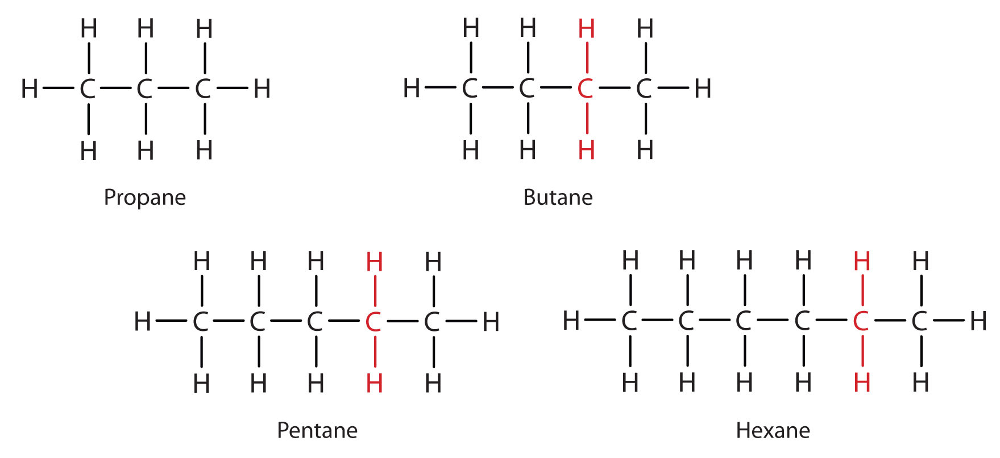Each succeeding formula incorporates one carbon atom and two hydrogen atoms more than the previous formula.
The principle of homology allows us to write a general formula for alkanes: CnH2n + 2. Using this formula, we can write a molecular formula for any alkane with a given number of carbon atoms. For example, an alkane with eight carbon atoms has the molecular formula C8H(2 × 8) + 2 = C8H18.
In the homologous series of alkanes, what is the molecular formula for the member just above C8H18?
Use the general formula for alkanes to write the molecular formula of the alkane with 12 carbon atoms.
C9H20
C12H26
What compounds contain fewer carbon atoms than C3H8 and are its homologs?
What compounds contain five to eight carbon atoms and are homologs of C4H10?
CH4 and C2H6
We can write the structure of butane (C4H10) by stringing four carbon atoms in a row,
–C–C–C–C–and then adding enough hydrogen atoms to give each carbon atom four bonds:
The compound butane has this structure, but there is another way to put 4 carbon atoms and 10 hydrogen atoms together. Place 3 of the carbon atoms in a row and then branch the fourth one off the middle carbon atom:
Now we add enough hydrogen atoms to give each carbon four bonds.
There is a hydrocarbon that corresponds to this structure, which means that two different compounds have the same molecular formula: C4H10. The two compounds have different properties—for example, one boils at −0.5°C; the other at −11.7°C. Different compounds having the same molecular formula are called isomersCompounds having the same molecular formula but different structural formulas and properties.. The compound with this branched chain is called isobutane (Figure 12.4 "Butane and Isobutane").
Figure 12.4 Butane and Isobutane
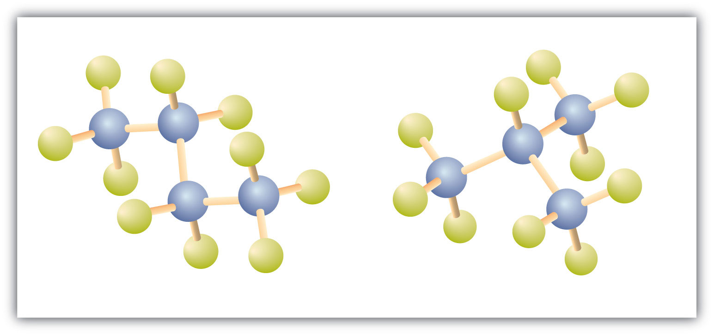The ball-and-stick models of these two compounds show them to be isomers; both have the molecular formula C4H10.
Notice that C4H10 is depicted with a bent chain in Figure 12.4 "Butane and Isobutane". The four-carbon chain may be bent in various ways because the groups can rotate freely about the C–C bonds. However, this rotation does not change the identity of the compound. It is important to realize that bending a chain does not change the identity of the compound; all of the following represent the same compound:
The formula of isobutane shows a continuous chain of three carbon atoms only, with the fourth attached as a branch off the middle carbon atom of the continuous chain.
Unlike C4H10, the compounds methane (CH4), ethane (C2H6), and propane (C3H8) do not exist in isomeric forms because there is only one way to arrange the atoms in each formula so that each carbon atom has four bonds.
Next beyond C4H10 in the homologous series is pentane. Each compound has the same molecular formula: C5H12. (Table 12.2 "The First 10 Straight-Chain Alkanes" has a column identifying the number of possible isomers for the first 10 straight-chain alkanes.) The compound at the far left is pentane because it has all five carbon atoms in a continuous chain. The compound in the middle is isopentane; like isobutane, it has a one CH3 branch off the second carbon atom of the continuous chain. The compound at the far right, discovered after the other two, was named neopentane (from the Greek neos, meaning “new”). Although all three have the same molecular formula, they have different properties, including boiling points: pentane, 36.1°C; isopentane, 27.7°C; and neopentane, 9.5°C.
A continuous (unbranched) chain of carbon atoms is often called a straight chain even though the tetrahedral arrangement about each carbon gives it a zigzag shape. Straight-chain alkanes are sometimes called normal alkanes, and their names are given the prefix n-. For example, butane is called n-butane. We will not use that prefix here because it is not a part of the system established by the International Union of Pure and Applied Chemistry.
In alkanes, can there be a two-carbon branch off the second carbon atom of a four-carbon chain? Explain.
A student is asked to write structural formulas for two different hydrocarbons having the molecular formula C5H12. She writes one formula with all five carbon atoms in a horizontal line and the other with four carbon atoms in a line, with a CH3 group extending down from the first attached to the third carbon atom. Do these structural formulas represent different molecular formulas? Explain why or why not.
No; the branch would make the longest continuous chain of five carbon atoms.
No; both are five-carbon continuous chains.
Briefly identify the important distinctions between a straight-chain alkane and a branched-chain alkane.
How are butane and isobutane related? How do they differ?
Name each compound.

Write the structural formula for each compound.
Indicate whether the structures in each set represent the same compound or isomers.
CH3CH2CH2CH3 and
CH3CH2CH2CH2CH3 and
Straight-chain alkanes and branched-chain alkanes have different properties as well as different structures.
We use several kinds of formulas to describe organic compounds. A molecular formula shows only the kinds and numbers of atoms in a molecule. For example, the molecular formula C4H10 tells us there are 4 carbon atoms and 10 hydrogen atoms in a molecule, but it doesn’t distinguish between butane and isobutane. A structural formulaA chemical formula that shows how the atoms of a molecule are attached to one another. shows all the carbon and hydrogen atoms and the bonds attaching them. Thus, structural formulas identify the specific isomers by showing the order of attachment of the various atoms.
Unfortunately, structural formulas are difficult to type/write and take up a lot of space. Chemists often use condensed structural formulasAn organic chemical formula that shows the hydrogen atoms (or other atoms or groups) right next to the carbon atoms to which they are attached. to alleviate these problems. The condensed formulas show hydrogen atoms right next to the carbon atoms to which they are attached, as illustrated for butane:
The ultimate condensed formula is a line-angle formulaAn organic chemical formula in which carbon atoms are implied at the corners and ends of lines. Each carbon atom is understood to be attached to enough hydrogen atoms to give each carbon atom four bonds., in which carbon atoms are implied at the corners and ends of lines, and each carbon atom is understood to be attached to enough hydrogen atoms to give each carbon atom four bonds. For example, we can represent pentane (CH3CH2CH2CH2CH3) and isopentane [(CH3)2CHCH2CH3] as follows:
Parentheses in condensed structural formulas indicate that the enclosed grouping of atoms is attached to the adjacent carbon atom.
Write the condensed structural formula for each structural formula.
A condensed structural formula for isohexane can be written as (CH3)2CHCH2CH2CH3. Draw the line-angle formula for isohexane.
Draw a line-angle formula for the compound CH3CH2CH(CH3)CH2CH2CH3.
Give the structural formula for the compound represented by this line-angle formula:
As noted in Table 12.2 "The First 10 Straight-Chain Alkanes", the number of isomers increases rapidly as the number of carbon atoms increases. There are 3 pentanes, 5 hexanes, 9 heptanes, and 18 octanes. It would be difficult to assign unique individual names that we could remember. A systematic way of naming hydrocarbons and other organic compounds has been devised by the International Union of Pure and Applied Chemistry (IUPAC). These rules, used worldwide, are known as the IUPAC System of NomenclatureA systematic way of naming chemical substances so that each has a unique name.. (Some of the names we used earlier, such as isobutane, isopentane, and neopentane, do not follow these rules and are called common names.) A stem name (Table 12.3 "Stems That Indicate the Number of Carbon Atoms in Organic Molecules") indicates the number of carbon atoms in the longest continuous chain (LCC). Atoms or groups attached to this carbon chain, called substituents, are then named, with their positions indicated by numbers. For now, we will consider only those substituents called alkyl groups.
Table 12.3 Stems That Indicate the Number of Carbon Atoms in Organic Molecules
| Stem | Number |
|---|---|
| meth- | 1 |
| eth- | 2 |
| prop- | 3 |
| but- | 4 |
| pent- | 5 |
| hex- | 6 |
| hept- | 7 |
| oct- | 8 |
| non- | 9 |
| dec- | 10 |
An alkyl groupA hydrocarbon group derived from an alkane by removal of a hydrogen atom. is a group of atoms that results when one hydrogen atom is removed from an alkane. The group is named by replacing the -ane suffix of the parent hydrocarbon with -yl. For example, the CH3 group derived from methane (CH4) results from subtracting one hydrogen atom and is called a methyl group.
The alkyl groups we will use most frequently are listed in Table 12.4 "Common Alkyl Groups". Alkyl groups are not independent molecules; they are parts of molecules that we consider as a unit to name compounds systematically.
Table 12.4 Common Alkyl Groups
| Parent Alkane | Alkyl Group | Condensed Structural Formula | ||
|---|---|---|---|---|
| methane |
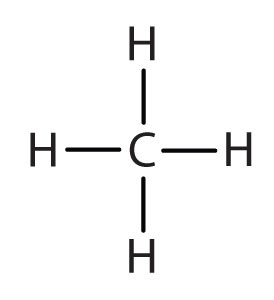
|
methyl |
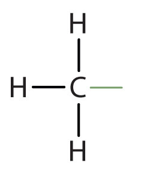
|
CH3– |
| ethane |
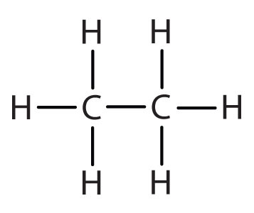
|
ethyl |
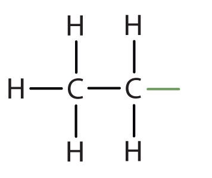
|
CH3CH2– |
| propane |
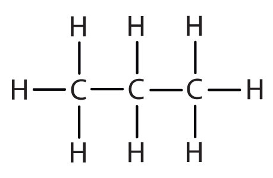
|
propyl |
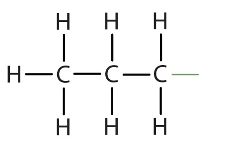
|
CH3CH2CH2– |
| isopropyl |
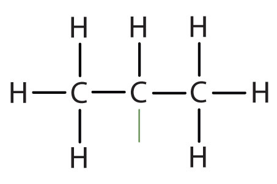
|
(CH3)2CH– | ||
| butane |
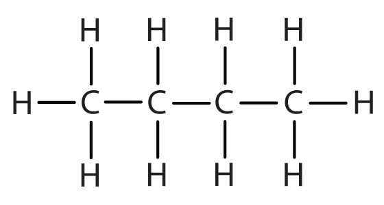
|
butyl* |
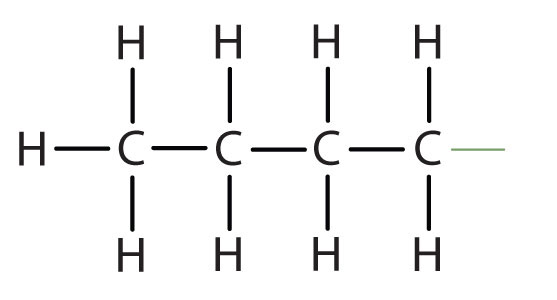
|
CH3CH2CH2CH2– |
| *There are four butyl groups, two derived from butane and two from isobutane. We will introduce the other three where appropriate. | ||||
Simplified IUPAC rules for naming alkanes are as follows (demonstrated in Example 12.1).
1. Name alkanes according to the LCC of carbon atoms in the molecule (rather than the total number of carbon atoms). This LCC, considered the parent chain, determines the base name, to which we add the suffix -ane to indicate that the molecule is an alkane.
2. If the hydrocarbon is branched, number the carbon atoms of the LCC. Numbers are assigned in the direction that gives the lowest numbers to the carbon atoms with attached substituents. Hyphens are used to separate numbers from the names of substituents; commas separate numbers from each other. (The LCC need not be written in a straight line; for example, the LCC in the following has five carbon atoms.)
3. Place the names of the substituent groups in alphabetical order before the name of the parent compound. If the same alkyl group appears more than once, the numbers of all the carbon atoms to which it is attached are expressed. If the same group appears more than once on the same carbon atom, the number of that carbon atom is repeated as many times as the group appears. Moreover, the number of identical groups is indicated by the Greek prefixes di-, tri-, tetra-, and so on. These prefixes are not considered in determining the alphabetical order of the substituents. For example, ethyl is listed before dimethyl; the di- is simply ignored. The last alkyl group named is prefixed to the name of the parent alkane to form one word.
When these rules are followed, every unique compound receives its own exclusive name. The rules enable us to not only name a compound from a given structure but also draw a structure from a given name. The best way to learn how to use the IUPAC system is to put it to work, not just memorize the rules. It’s easier than it looks.
Name each compound.
Solution
Name each compound.
Draw the structure for each compound.
Solution
In drawing structures, always start with the parent chain.
The parent chain is butane, indicating four carbon atoms in the LCC.

Then add the groups at their proper positions. You can number the parent chain from either direction as long as you are consistent; just don’t change directions before the structure is done. The name indicates two methyl (CH3) groups, one on the second carbon atom and one on the third.
Finally, fill in all the hydrogen atoms, keeping in mind that each carbon atom must have four bonds.
The parent chain is heptane in this case, indicating seven carbon atoms in the LCC.
–C–C–C–C–C–C–C–Adding the groups at their proper positions gives
Filling in all the hydrogen atoms gives the following condensed structural formulas:
Note that the bonds (dashes) can be shown or not; sometimes they are needed for spacing.
Draw the structure for each compound.
4-ethyloctane
3-ethyl-2-methylpentane
3,3,5-trimethylheptane
What is a CH3 group called when it is attached to a chain of carbon atoms—a substituent or a functional group?
Which type of name uses numbers to locate substituents—common names or IUPAC names?
substituent
IUPAC names
Briefly identify the important distinctions between an alkane and an alkyl group.
How many carbon atoms are present in each molecule?
How many carbon atoms are present in each molecule?
Draw the structure for each compound.
Draw the structure for each compound.
Name each compound according to the IUPAC system.
Name each compound according to the IUPAC system.
What is a substituent? How is the location of a substituent indicated in the IUPAC system?
Briefly identify the important distinctions between a common name and an IUPAC name.
An alkane is a molecule; an alkyl group is not an independent molecule but rather a part of a molecule that we consider as a unit.
Common names are widely used but not very systematic; IUPAC names identify a parent compound and name other groups as substituents.
Because alkanes have relatively predictable physical properties and undergo relatively few chemical reactions other than combustion, they serve as a basis of comparison for the properties of many other organic compound families. Let’s consider their physical properties first.
Table 12.5 "Physical Properties of Some Alkanes" describes some of the properties of some of the first 10 straight-chain alkanes. Because alkane molecules are nonpolar, they are insoluble in water, which is a polar solvent, but are soluble in nonpolar and slightly polar solvents. (For more information about solubility, see Chapter 9 "Solutions", Section 9.2 "Concentration".) Consequently, alkanes themselves are commonly used as solvents for organic substances of low polarity, such as fats, oils, and waxes. Nearly all alkanes have densities less than 1.0 g/mL and are therefore less dense than water (the density of H2O is 1.00 g/mL at 20°C). These properties explain why oil and grease do not mix with water but rather float on its surface.
Table 12.5 Physical Properties of Some Alkanes
| Molecular Name | Formula | Melting Point (°C) | Boiling Point (°C) | Density (20°C)* | Physical State (at 20°C) |
|---|---|---|---|---|---|
| methane | CH4 | –182 | –164 | 0.668 g/L | gas |
| ethane | C2H6 | –183 | –89 | 1.265 g/L | gas |
| propane | C3H8 | –190 | –42 | 1.867 g/L | gas |
| butane | C4H10 | –138 | –1 | 2.493 g/L | gas |
| pentane | C5H12 | –130 | 36 | 0.626 g/mL | liquid |
| hexane | C6H14 | –95 | 69 | 0.659 g/mL | liquid |
| octane | C8H18 | –57 | 125 | 0.703 g/mL | liquid |
| decane | C10H22 | –30 | 174 | 0.730 g mL | liquid |
| *Note the change in units going from gases (grams per liter) to liquids (grams per milliliter). Gas densities are at 1 atm pressure. | |||||
Figure 12.5 Oil Spills

Crude oil coats the water’s surface in the Gulf of Mexico after the Deepwater Horizon oil rig sank following an explosion. The leak was a mile below the surface, making it difficult to estimate the size of the spill. One liter of oil can create a slick 2.5 hectares (6.3 acres) in size. This and similar spills provide a reminder that hydrocarbons and water don’t mix.
Source: Photo courtesy of NASA Goddard / MODIS Rapid Response Team, http://www.nasa.gov/topics/earth/features/oilspill/oil-20100519a.html.
Table 12.5 "Physical Properties of Some Alkanes" indicates that the first four members of the alkane series are gases at ordinary temperatures. Natural gas is composed chiefly of methane, which has a density of about 0.67 g/L. The density of air is about 1.29 g/L. Because natural gas is less dense than air, it rises. When a natural-gas leak is detected and shut off in a room, the gas can be removed by opening an upper window. On the other hand, bottled gas can be either propane (density 1.88 g/L) or butanes (a mixture of butane and isobutane; density about 2.5 g/L). Both are much heavier than air (density 1.2 g/L). If bottled gas escapes into a building, it collects near the floor. This presents a much more serious fire hazard than a natural-gas leak because it is more difficult to rid the room of the heavier gas.
As shown in Table 12.5 "Physical Properties of Some Alkanes", the boiling points of the straight-chain alkanes increase with increasing molar mass. This general rule holds true for the straight-chain homologs of all organic compound families. Larger molecules have greater surface areas and consequently interact more strongly; more energy is therefore required to separate them. For a given molar mass, the boiling points of alkanes are relatively low because these nonpolar molecules have only weak dispersion forces to hold them together in the liquid state.
An understanding of the physical properties of the alkanes is important in that petroleum and natural gas and the many products derived from them—gasoline, bottled gas, solvents, plastics, and more—are composed primarily of alkanes. This understanding is also vital because it is the basis for describing the properties of other organic and biological compound families. For example, large portions of the structures of lipids consist of nonpolar alkyl groups. Lipids include the dietary fats and fatlike compounds called phospholipids and sphingolipids that serve as structural components of living tissues. (For more information about lipids, see Chapter 17 "Lipids".). These compounds have both polar and nonpolar groups, enabling them to bridge the gap between water-soluble and water-insoluble phases. This characteristic is essential for the selective permeability of cell membranes.

Tripalmitin (a), a typical fat molecule, has long hydrocarbon chains typical of most lipids. Compare these chains to hexadecane (b), an alkane with 16 carbon atoms.
Without referring to a table, predict which has a higher boiling point—hexane or octane. Explain.
If 25 mL of hexane were added to 100 mL of water in a beaker, which of the following would you expect to happen? Explain.
octane because of its greater molar mass
b; hexane is insoluble in water and less dense than water.
Without referring to a table or other reference, predict which member of each pair has the higher boiling point.
For which member of each pair is hexane a good solvent?
Alkane molecules are nonpolar and therefore generally do not react with ionic compounds such as most laboratory acids, bases, oxidizing agents, or reducing agents. Consider butane as an example:
Neither positive ions nor negative ions are attracted to a nonpolar molecule. In fact, the alkanes undergo so few reactions that they are sometimes called paraffins, from the Latin parum affinis, meaning “little affinity.”
Two important reactions that the alkanes do undergo are combustion and halogenation. Nothing happens when alkanes are merely mixed with oxygen (O2) at room temperature, but when a flame or spark provides the activation energy, a highly exothermic combustion reactionA chemical reaction in which a substance combines with molecular oxygen to make oxygen-containing compounds of other elements in the reaction. proceeds vigorously. For methane (CH4), the reaction is as follows:
CH4 + 2O2 → CO2 + 2H2O + heatIf the reactants are adequately mixed and there is sufficient oxygen, the only products are carbon dioxide (CO2), water (H2O), and heat—heat for cooking foods, heating homes, and drying clothes. Because conditions are rarely ideal, however, other products are frequently formed. When the oxygen supply is limited, carbon monoxide (CO) is a by-product:
2CH4 + 3O2 → 2CO + 4H2OThis reaction is responsible for dozens of deaths each year from unventilated or improperly adjusted gas heaters. (Similar reactions with similar results occur with kerosene heaters.)
Alkanes also react with the halogens chlorine (Cl2) and bromine (Br2) in the presence of ultraviolet light or at high temperatures to yield chlorinated and brominated alkanes. For example, chlorine reacts with excess methane (CH4) to give methyl chloride (CH3Cl).
CH4 + Cl2 → CH3Cl + HClWith more chlorine, a mixture of products is obtained: CH3Cl, CH2Cl2, CHCl3, and CCl4.
Fluorine (F2), the lightest halogen, combines explosively with most hydrocarbons. Iodine (I2) is relatively unreactive. Fluorinated and iodinated alkanes are produced by indirect methods. We will discuss the names and uses of halogenated hydrocarbons in Section 12.8 "Halogenated Hydrocarbons".
Why are alkanes sometimes called paraffins?
Which halogen reacts most readily with alkanes? Which reacts least readily?
Alkanes do not react with many common chemicals. They are sometimes called paraffins, from the Latin parum affinis, meaning “little affinity.”
most readily: F2; least readily: I2
Why do alkanes usually not react with ionic compounds such as most laboratory acids, bases, oxidizing agents, or reducing agents?
Write an equation for the complete combustion of methane (CH4, the main component of natural gas).
What is the most important reaction of alkanes?
Name some substances other than oxygen that react readily with alkanes.
Alkanes are nonpolar; they do not attract ions.
combustion
Many organic compounds are closely related to the alkanes. As we noted in Section 12.7 "Chemical Properties of Alkanes", alkanes react with halogens to produce halogenated hydrocarbons, the simplest of which have a single halogen atom substituted for a hydrogen atom of the alkane. Even more closely related are the cycloalkanes, compounds in which the carbon atoms are joined in a ring, or cyclic fashion.
The reactions of alkanes with halogens produce halogenated hydrocarbonsA hydrocarbon in which one or more hydrogen atoms has been replaced by a halogen atom., compounds in which one or more hydrogen atoms of a hydrocarbon have been replaced by halogen atoms:
The replacement of only one hydrogen atom gives an alkyl halide (or haloalkane)A compound resulting from the replacement of a hydrogen atom of an alkane with a halogen atom.. The common names of alkyl halides consist of two parts: the name of the alkyl group plus the stem of the name of the halogen, with the ending -ide. The IUPAC system uses the name of the parent alkane with a prefix indicating the halogen substituents, preceded by number indicating the substituent’s location. The prefixes are fluoro-, chloro-, bromo-, and iodo-. Thus CH3CH2Cl has the common name ethyl chloride and the IUPAC name chloroethane. Alkyl halides with simple alkyl groups (one to four carbon atoms) are often called by common names. Those with a larger number of carbon atoms are usually given IUPAC names.
Give the common and IUPAC names for each compound.
Solution
Give common and IUPAC names for each compound.
CH3CH2I
CH3CH2CH2CH2F
Give the IUPAC name for each compound.
Solution
Give the IUPAC name for each compound.
A wide variety of interesting and often useful compounds have one or more halogen atoms per molecule. For example, methane (CH4) can react with chlorine (Cl2), replacing one, two, three, or all four hydrogen atoms with Cl atoms. Several halogenated products derived from methane and ethane (CH3CH3) are listed in Table 12.6 "Some Halogenated Hydrocarbons", along with some of their uses.
Table 12.6 Some Halogenated Hydrocarbons
| Formula | Common Name | IUPAC Name | Some Important Uses |
|---|---|---|---|
| Derived from CH4 | |||
| CH3Cl | methyl chloride | chloromethane | refrigerant; the manufacture of silicones, methyl cellulose, and synthetic rubber |
| CH2Cl2 | methylene chloride | dichloromethane | laboratory and industrial solvent |
| CHCl3 | chloroform | trichloromethane | industrial solvent |
| CCl4 | carbon tetrachloride | tetrachloromethane | dry-cleaning solvent and fire extinguishers (but no longer recommended for use) |
| CBrF3 | halon-1301 | bromotrifluoromethane | fire extinguisher systems |
| CCl3F | chlorofluorocarbon-11 (CFC-11) | trichlorofluoromethane | foaming plastics |
| CCl2F2 | chlorofluorocarbon-12 (CFC-12) | dichlorodifluoromethane | refrigerant |
| Derived from CH3CH3 | |||
| CH3CH2Cl | ethyl chloride | chloroethane | local anesthetic |
| ClCH2CH2Cl | ethylene dichloride | 1,2-dichloroethane | solvent for rubber |
| CCl3CH3 | methylchloroform | 1,1,1-trichloroethane | solvent for cleaning computer chips and molds for shaping plastics |
Once widely used in consumer products, many chlorinated hydrocarbons are suspected carcinogens (cancer-causing substances) and also are known to cause severe liver damage. An example is carbon tetrachloride (CCl4), once used as a dry-cleaning solvent and in fire extinguishers but no longer recommended for either use. Even in small amounts, its vapor can cause serious illness if exposure is prolonged. Moreover, it reacts with water at high temperatures to form deadly phosgene (COCl2) gas, which makes the use of CCl4 in fire extinguishers particularly dangerous.
Ethyl chloride, in contrast, is used as an external local anesthetic. When sprayed on the skin, it evaporates quickly, cooling the area enough to make it insensitive to pain. It can also be used as an emergency general anesthetic.
Bromine-containing compounds are widely used in fire extinguishers and as fire retardants on clothing and other materials. Because they too are toxic and have adverse effects on the environment, scientists are engaged in designing safer substitutes for them, as for many other halogenated compounds.
Alkanes substituted with both fluorine (F) and chlorine (Cl) atoms have been used as the dispersing gases in aerosol cans, as foaming agents for plastics, and as refrigerants. Two of the best known of these chlorofluorocarbons (CFCs) are listed in Table 12.6 "Some Halogenated Hydrocarbons".
Chlorofluorocarbons contribute to the greenhouse effect in the lower atmosphere. They also diffuse into the stratosphere, where they are broken down by ultraviolet (UV) radiation to release Cl atoms. These in turn break down the ozone (O3) molecules that protect Earth from harmful UV radiation. Worldwide action has reduced the use of CFCs and related compounds. The CFCs and other Cl- or bromine (Br)-containing ozone-destroying compounds are being replaced with more benign substances. Hydrofluorocarbons (HFCs), such as CH2FCF3, which have no Cl or Br to form radicals, are one alternative. Another is hydrochlorofluorocarbons (HCFCs), such as CHCl2CF3. HCFC molecules break down more readily in the troposphere, and fewer ozone-destroying molecules reach the stratosphere.
Ozone in the upper atmosphere shields Earth’s surface from UV radiation from the sun, which can cause skin cancer in humans and is also harmful to other animals and to some plants. Ozone “holes” in the upper atmosphere (the gray, pink, and purple areas at the center) are large areas of substantial ozone depletion. They occur mainly over Antarctica from late August through early October and fill in about mid-November. Ozone depletion has also been noted over the Arctic regions. The largest ozone hole ever observed occurred on 24 September 2006.
Source: Image courtesy of NASA, http://ozonewatch.gsfc.nasa.gov/daily.php?date=2006-09-24.
What is the IUPAC name for the HFC that has the formula CH2FCF3? (Hint: you must use a number to indicate the location of each substituent F atom.)
What is the IUPAC name for the HCFC that has the formula CHCl2CF3?
1,1,1,2-tetrafluoroethane
1,1,1-trifluoro-2,2-dichloroethane
Write the condensed structural formula for each compound.
Write the condensed structural formula for each compound.
Write the condensed structural formulas for the two isomers that have the molecular formula C3H7Br. Give the common name and the IUPAC name of each.
Write the condensed structural formulas for the four isomers that have the molecular formula C4H9Br. Give the IUPAC name of each.
What is a CFC? How are CFCs involved in the destruction of the ozone layer?
Explain why each compound is less destructive to the ozone layer than are CFCs.
CH3CH2CH2Br, propyl bromide, 1-bromopropane; CH3CHBrCH3, isopropyl bromide, 2-bromopropane
compounds containing Cl, F, and C; by releasing Cl atoms in the stratosphere
The hydrocarbons we have encountered so far have been composed of molecules with open-ended chains of carbon atoms. When a chain contains three or more carbon atoms, the atoms can join to form ring or cyclic structures. The simplest of these cyclic hydrocarbonsA hydrocarbon with a ring of carbon atoms. has the formula C3H6. Each carbon atom has two hydrogen atoms attached (Figure 12.6 "Ball-and-Spring Model of Cyclopropane") and is called cyclopropane.
Figure 12.6 Ball-and-Spring Model of Cyclopropane

The springs are bent to join the carbon atoms.
With its boiling point of −33°C, cyclopropane is a gas at room temperature. It is also a potent, quick-acting anesthetic with few undesirable side effects in the body. It is no longer used in surgery, however, because it forms explosive mixtures with air at nearly all concentrations.
The cycloalkanesA cyclic hydrocarbon with only single bonds.—cyclic hydrocarbons with only single bonds—are named by adding the prefix cyclo- to the name of the open-chain compound having the same number of carbon atoms as there are in the ring. Thus the name for the cyclic compound C4H8 is cyclobutane. The carbon atoms in cyclic compounds can be represented by line-angle formulas that result in regular geometric figures. Keep in mind, however, that each corner of the geometric figure represents a carbon atom plus as many hydrogen atoms as needed to give each carbon atom four bonds.
Some cyclic compounds have substituent groups attached. Example 5 interprets the name of a cycloalkane with a single substituent group.
Draw the structure for each compound.
Solution
The name cyclopentane indicates a cyclic (cyclo) alkane with five (pent-) carbon atoms. It can be represented as a pentagon.
The name methylcyclobutane indicates a cyclic alkane with four (but-) carbon atoms in the cyclic part. It can be represented as a square with a CH3 group attached.
Draw the structure for each compound.
The properties of cyclic hydrocarbons are generally quite similar to those of the corresponding open-chain compounds. So cycloalkanes (with the exception of cyclopropane, which has a highly strained ring) act very much like noncyclic alkanes. Cyclic structures containing five or six carbon atoms, such as cyclopentane and cyclohexane, are particularly stable. We will see in Chapter 16 "Carbohydrates" that some carbohydrates (sugars) form five- or six-membered rings in solution.
The cyclopropane ring is strained because the C–C–C angles are 60°, and the preferred (tetrahedral) bond angle is 109.5°. (This strain is readily evident when you try to build a ball-and-stick model of cyclopropane; see Figure 12.6 "Ball-and-Spring Model of Cyclopropane".) Cyclopentane and cyclohexane rings have little strain because the C–C–C angles are near the preferred angles.
What is the molecular formula of cyclooctane?
What is the IUPAC name for this compound?
C8H16
ethylcyclopropane
Draw the structure for each compound.
Draw the structure for each compound.
Cycloalkyl groups can be derived from cycloalkanes in the same way that alkyl groups are derived from alkanes. These groups are named as cyclopropyl, cyclobutyl, and so on. Name each cycloalkyl halide.
Halogenated cycloalkanes can be named by the IUPAC system. As with alkyl derivatives, monosubstituted derivatives need no number to indicate the position of the halogen. To name disubstituted derivatives, the carbon atoms are numbered starting at the position of one substituent (C1) and proceeding to the second substituted atom by the shortest route. Name each compound.
To ensure that you understand the material in this chapter, you should review the meanings of the following bold terms in the summary and ask yourself how they relate to the topics in the chapter.
Organic chemistry is the chemistry of carbon compounds, and inorganic chemistry is the chemistry of all the other elements. Carbon atoms can form stable covalent bonds with other carbon atoms and with atoms of other elements, and this property allows the formation the tens of millions of organic compounds. Hydrocarbons contain only hydrogen and carbon atoms.
Hydrocarbons in which each carbon atom is bonded to four other atoms are called alkanes or saturated hydrocarbons. They have the general formula CnH2n + 2. Any given alkane differs from the next one in a series by a CH2 unit. Any family of compounds in which adjacent members differ from each other by a definite factor is called a homologous series.
Carbon atoms in alkanes can form straight chains or branched chains. Two or more compounds having the same molecular formula but different structural formulas are isomers of each other. There are no isomeric forms for the three smallest alkanes; beginning with C4H10, all other alkanes have isomeric forms.
A structural formula shows all the carbon and hydrogen atoms and how they are attached to one another. A condensed structural formula shows the hydrogen atoms right next to the carbon atoms to which they are attached. A line-angle formula is a formula in which carbon atoms are implied at the corners and ends of lines. Each carbon atom is understood to be attached to enough hydrogen atoms to give each carbon atom four bonds.
The IUPAC System of Nomenclature provides rules for naming organic compounds. An alkyl group is a unit formed by removing one hydrogen atom from an alkane.
The physical properties of alkanes reflect the fact that alkane molecules are nonpolar. Alkanes are insoluble in water and less dense than water.
Alkanes are generally unreactive toward laboratory acids, bases, oxidizing agents, and reducing agents. They do burn (undergo combustion reactions).
Alkanes react with halogens by substituting one or more halogen atoms for hydrogen atoms to form halogenated hydrocarbons. An alkyl halide (haloalkane) is a compound resulting from the replacement of a hydrogen atom of an alkane with a halogen atom.
Cycloalkanes are hydrocarbons whose molecules are closed rings rather than straight or branched chains. A cyclic hydrocarbon is a hydrocarbon with a ring of carbon atoms.
You find an unlabeled jar containing a solid that melts at 48°C. It ignites readily and burns readily. The substance is insoluble in water and floats on the surface. Is the substance likely to be organic or inorganic?
Give the molecular formulas for methylcyclopentane, 2-methylpentane, and cyclohexane. Which are isomers?
What is wrong with each name? (Hint: first write the structure as if it were correct.) Give the correct name for each compound.
What is the danger in swallowing a liquid alkane?
Distinguish between lighter and heavier liquid alkanes in terms of their effects on the skin.
Following is the line formula for an alkane. Draw its structure and give its name.

Write equations for the complete combustion of each compound.
The density of a gasoline sample is 0.690 g/mL. On the basis of the complete combustion of octane, calculate the amount in grams of carbon dioxide (CO2) and water (H2O) formed per gallon (3.78 L) of the gasoline when used in an automobile.
Draw the structures for the five isomeric hexanes (C6H14). Name each by the IUPAC system.
Indicate whether the structures in each set represent the same compound or isomers.


Consider the line-angle formulas shown here and answer the questions.

organic
Lighter alkanes wash away protective skin oils; heavier alkanes form a protective layer.
CH3CH2CH2CH2CH2CH3; hexane


ii and iii; CH3CH2CH2CH2CH2CH2CH3 and

i; ethylcyclopentane;